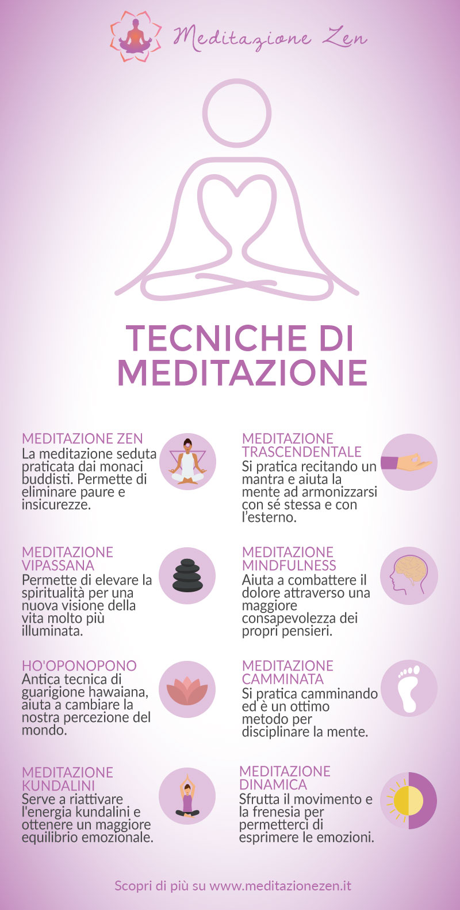
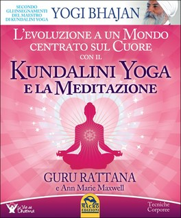

MEDITAZIONE, QUANTE TECNICHE ?
E QUALI SONO I BENEFICI ?

Sono molte le evidenze scientifiche dei benefici della meditazione alla consapevolezza, su problematiche psicologiche e fisiche. Non solo infatti sono dimostrati i suoi effetti sulle strutture del cervello, ma anche sulla gestione di sofferenza psicologica e fisica in ambiti medici come ad esempio cancro, malattie cardiovascolari, dolore cronico. Oggi è anche molto utilizzata come integrazione alla psicoterapia in caso di disagi e disturbi psicopatologici e dipendenze.

Al contrario di quanto si può pensare, la pratica della consapevolezza non si impara solo seduti su un tappetino o su un lettino ma la si può praticare in qualsiasi momento della giornata, facendo attenzione per esempio alle sensazioni del camminare quando camminiamo, oppure al gusto del cibo quando mangiamo, oppure ancora all’osservare l’ambiente intorno a noi, i rumori, gli odori, prestando attenzione a qualsiasi azione stiamo svolgendo; questa è chiamata pratica INFORMALE.
Vi è poi la pratica FORMALE, che consiste in altri esercizi che richiedono un certo periodo di tempo quotidiano, che vanno eseguiti da seduti o camminando, in cui si impara per esempio la concentrazione sul respiro, fondamentale per vivere momento per momento.
Oppure la meditazione attraverso la camminata o ancora la meditazione sul cibo. Tale pratica FORMALE si può apprendere bene attraverso corsi di MINDFULNESS.
Vediamo insieme quali sono i BENEFICI della meditazione :